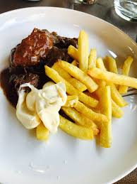

Vlaamse kost

Ingredienten
Ingrediënten voor stoofvlees (4 personen):
- 1 kg stoofvlees (rundvlees, bijvoorbeeld runderwangen of sukade)
- 2 grote uien, in halve ringen gesneden
- 2 teentjes knoflook, fijngehakt
- 1 flesje Belgisch donker bier (ongeveer 330 ml, bijvoorbeeld Leffe Bruin, Westmalle Dubbel of een ander bruin bier)
- 2 eetlepels mosterd
- 2 sneetjes donker brood (of peperkoek)
- 1 eetlepel bloem (optioneel, om te binden)
- 1 eetlepel bruine suiker (of cassonade)
- 1 takje tijm
- 2 laurierblaadjes
- 1 eetlepel azijn of appelstroop (optioneel, voor balans)
- Boter om te bakken
- Zout en peper naar smaak
Bereiding
- Vlees aanbakken: Verhit een klontje boter in een grote stoofpot of braadpan. Bak het stoofvlees in porties goudbruin aan alle kanten. Haal het vlees uit de pan en zet even opzij.
- Uien bakken: Voeg eventueel wat extra boter toe in dezelfde pan. Bak de uien op een middelhoog vuur tot ze glazig en zacht zijn, ongeveer 10 minuten. Voeg de knoflook toe en bak nog een minuut mee.
- Saus maken: Leg het aangebakken vlees terug in de pan bij de uien. Bestrooi het vlees eventueel met een beetje bloem en roer goed door om de saus te binden. Giet het bier over het vlees en breng zachtjes aan de kook. Voeg de laurierblaadjes, tijm, bruine suiker en azijn of appelstroop toe.
- Mosterd en brood: Besmeer de sneetjes brood (of peperkoek) met mosterd en leg ze bovenop het vlees in de pan. Het brood zal tijdens het koken oplossen en de saus dikker maken.
- Laten sudderen: Zet het vuur laag en laat het stoofvlees 2 tot 3 uur zachtjes sudderen met het deksel op de pan. Roer af en toe en controleer of het vlees zacht wordt. Als de saus te dun is, kun je deze nog wat laten inkoken zonder deksel.
- Op smaak brengen: Proef de saus en voeg eventueel extra zout, peper of suiker toe naar smaak. Haal de laurierblaadjes en takjes tijm eruit voordat je het serveert.